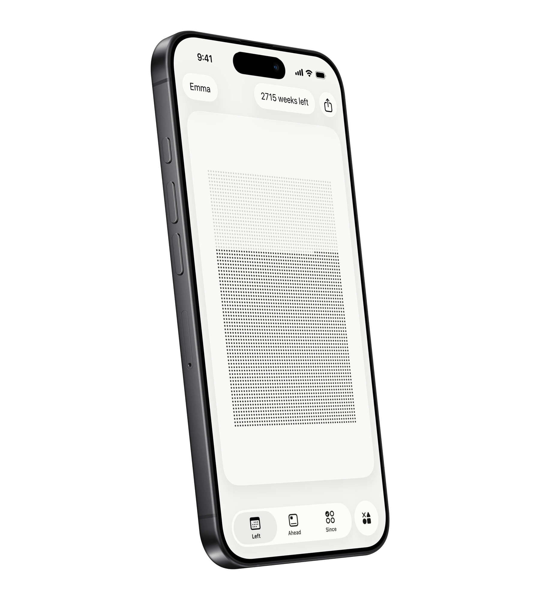
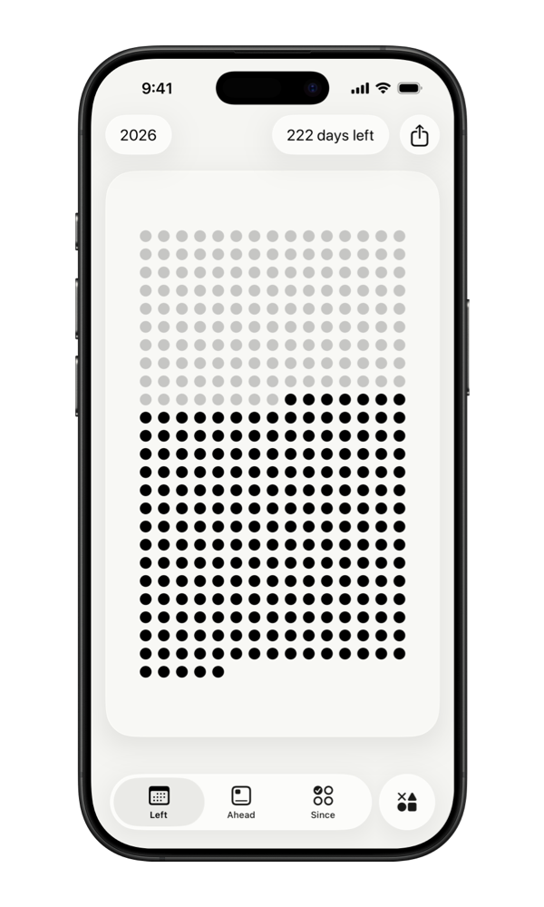
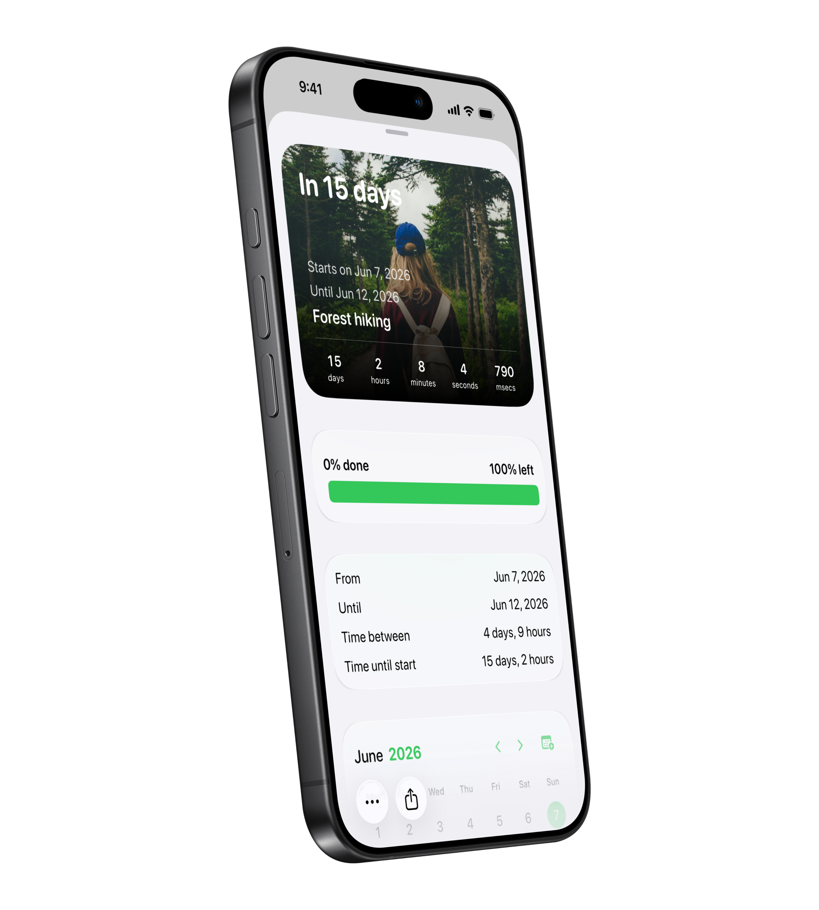
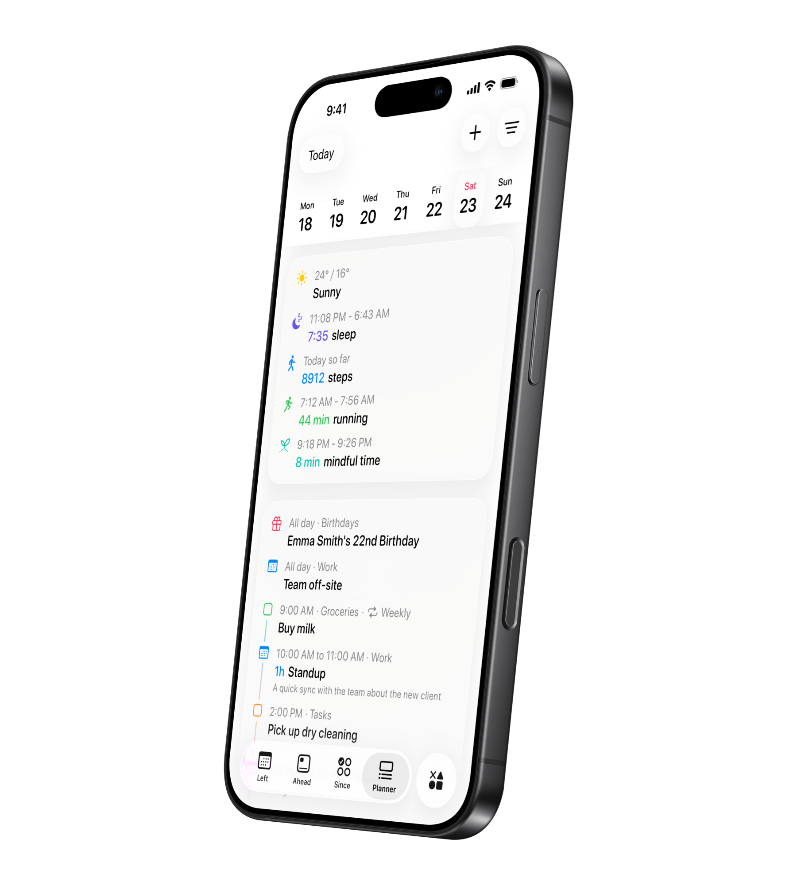

Time Left
Your time, made visible.
See the year, month, week, day, hour, minute, and your life as grids of symbols. The past dims. What remains stays visible on your Home Screen, Lock Screen, and StandBy.

Left visualizes the time you have left and helps you make the most of it with habits, streaks, countdowns, and a planner for your day.
Scan with your camera to find Left on the App Store. Or search "Left" on the App Store.

The time you have, the dates to look ahead to, the habits you build, and the person you are becoming; all with Left.
See the year, month, week, day, hour, minute, and your life as symbols that dim as time passes.

See what is left, build the habits that matter, count down to what is ahead, and plan the day in front of you.
See the year, month, week, day, hour, minute, and your life as grids of symbols. The past dims. What remains stays visible on your Home Screen, Lock Screen, and StandBy.

Habits, streaks, and Aim work together to move you forward. Build habits on your own schedule, protect the streaks you care about, and track any number-based goal with Aim — save money, read books, study hours, reduce debt, or hit any measurable milestone.

Add the dates that pull you forward: trips, birthdays, holidays, anniversaries, deadlines, or anything else worth counting down to. Keep them in widgets, import from Calendar, and add friends to joint special dates.

Planner brings your day into one view: Apple Reminders, calendar events, habits, streaks, weather, sleep, workouts, and more.

Left on Apple Watch gives you quick access to time progress, Planner, habits, aims, streaks, and Ahead countdowns. Check what is next, complete reminders, log habits, update aim progress, reset streaks, and browse upcoming dates without opening your iPhone.

Share progress with friends, turn time into a wallpaper, calculate dates, and explore the smaller tools inside Left.
Your time left is limited. Be aware of it. Left makes time matter. The dates ahead matter. The habits you keep matter. The streaks you protect matter. So does the person you are trying to become.
Ready-made aims, habits, streaks, and countdowns for the things worth keeping in view.
What people using Left to keep habits, countdowns, and time visible on their screens have to say.
Trips, runs, mornings, breaks, deadlines, anniversaries, ordinary days, and plans happen outside Left. Make the most of it.


Have questions? Here are quick answers. You can always explore the app or contact us if you need help.
Download Left on your iPhone to see the time you have left, dates you are looking forward to, build the habits you want to keep, and become a better version of yourself.
Scan with your camera to find Left on the App Store. Or search "Left" on the App Store.